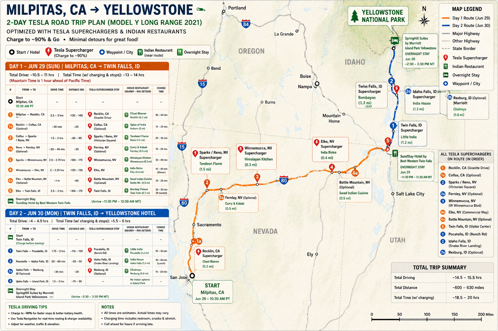

Shareable trip plan
Yellowstone 4-Day Tesla Itinerary
Road trip from Milpitas on June 29, arriving near Yellowstone on June 30, followed by four park days through July 3, 2026. Built around Tesla charging, Indian food stops, scenic loops, and wildlife windows for a 2021 Tesla Model Y Long Range.
Daily focus
Pick a day
Day 1 · Jun 30 Tue
West Yellowstone and Grand Prismatic
Easy arrival afternoon with Madison River, Grand Prismatic Overlook, Firehole Lake Drive, and return to hotel.
- Estimated miles
- ~70
- Battery end
- 55-65%
- Energy style
- Light warm-up day
Journey to Yellowstone
Milpitas to Island Park in two days
Approximately 600–630 miles, 14.5–15.5 hours of driving, and 18.5–20 hours including charging and meal stops.

Day 1 · June 29
Milpitas → Twin Falls
Milpitas → Rocklin/Colfax → Sparks/Reno → Winnemucca → Elko or Battle Mountain → Twin Falls
- Driving
- 10.5–11 hr
- With stops
- 13–14 hr
- Start
- 10:30 AM PT
Charging plan
Rocklin or optional Colfax, Sparks/Reno, Winnemucca, Elko, optional Battle Mountain, then Twin Falls.
Food near the route
Chat Bhavan, Tandoori Flame, Himalayan Kitchen, India Bistro, Swad Indian Cuisine, or Bombay Palace.
Overnight: SureStay Hotel by Best Western Twin Falls. Expected arrival around 11:30 PM–12:30 AM MT.
Day 2 · June 30
Twin Falls → Yellowstone hotel
Twin Falls → Pocatello → Idaho Falls → optional Rexburg → SpringHill Suites Island Park Yellowstone
- Driving
- 4–4.5 hr
- With stops
- 5.5–6 hr
- Arrival
- 2:30–3:30 PM MT
Charging plan
Leave Twin Falls well charged, then use Pocatello and Idaho Falls. Rexburg is an optional final top-up.
Food near the route
Little India in Pocatello, India House in Idaho Falls, or Chutneys in Rexburg.
Destination: SpringHill Suites by Marriott Island Park Yellowstone, ready for the Day 1 afternoon park route.
Charge to roughly 90% at major stops, keep optional chargers as backups, and allow extra time for traffic, weather, meals, and late arrival check-in.
Interactive road map
Actual roads, stops, and charging
OpenStreetMap tiles with OSRM road geometry. Select one day for numbered stops or show all four colored routes together.
Validating routes…
| Day | Ordered stops | Gate used | Miles | Drive time | Charge stop | End SOC |
|---|
Coordinates are WGS84. Distances exclude traffic, wildlife delays, parking searches, and closures. Verify conditions in live navigation before departure.
Day 1 West Yellowstone + Grand Prismatic
All planned stops
- SpringHill SuitesDepart the hotel for the afternoon park route.
- West EntranceEnter Yellowstone and follow the Madison River corridor.
- Madison JunctionScenic river junction and the turn toward the geyser basins.
- Grand Prismatic SpringWalk the Midway Geyser Basin boardwalk for the park’s largest hot spring.
- Old FaithfulWatch a geyser eruption and explore the historic inn and Upper Geyser Basin.
- West Yellowstone SuperchargerOptional top-up before the final hotel leg.
- SpringHill SuitesReturn to the hotel.
Drive: 111 miles. Estimated battery: ~82% after optional top-up.
Hourly forecast in Celsius
Forecast: ~3°C morning, ~21°C afternoon, ~13°C evening. Rain chance stays low.
Clothes
- Light base layer plus fleece or hoodie for the cool morning and evening.
- Rain shell in the car; afternoon storms are common.
- Comfortable walking shoes for overlook and boardwalks.
Food that fits
- Late lunch or early dinner in West Yellowstone before entering.
- Carry snacks and water for Grand Prismatic and Firehole stops.
- Dinner back in West Yellowstone after charging.
Day 2 Old Faithful + Yellowstone Lake
All planned stops
- SpringHill SuitesEarly hotel departure for the south loop.
- West EntranceEnter Yellowstone through the west gate.
- Madison JunctionContinue south along the Firehole River corridor.
- Old FaithfulSee the geyser, visitor center, historic inn, and nearby thermal features.
- West Thumb Geyser BasinWalk lakeside boardwalks with hot springs beside Yellowstone Lake.
- Lake YellowstoneSee the lakefront and historic Lake Yellowstone Hotel area.
- SpringHill SuitesReturn to the hotel through the West Entrance.
Drive: 175 miles. Estimated battery: ~33% end.
Hourly forecast in Celsius
Forecast: ~3°C morning, ~26°C afternoon, ~16°C evening near West Yellowstone.
Clothes
- Layered top, windbreaker, and sun hat.
- Lake stops can feel cooler and windier than Old Faithful.
- Bring sunglasses; boardwalk glare can be strong midday.
Food that fits
- Breakfast or coffee at Old Faithful Inn, Snow Lodge, or Bear Paw Deli.
- Lunch around Old Faithful before the lake loop.
- Backup grab-and-go near Lake Hotel Deli or Lake Lodge cafeteria.
Day 3 Canyon + Hayden Wildlife
All planned stops
- SpringHill SuitesDepart early with breakfast and wildlife gear ready.
- West EntranceEnter the park and follow the Madison River.
- Madison JunctionTurn north toward Norris and the Grand Loop Road.
- Norris Geyser BasinExplore Porcelain Basin or Back Basin in Yellowstone’s hottest thermal area.
- Canyon VillageFood, restrooms, visitor services, and access to the canyon area.
- Artist PointClassic view of Lower Falls and the Grand Canyon of the Yellowstone.
- Hayden ValleyWildlife viewing for bison, elk, and possible bears or wolves from safe pullouts.
- SpringHill SuitesReturn to the hotel through the West Entrance.
Drive: 148 miles. Estimated battery: ~43% end.
Hourly forecast in Celsius
Forecast: ~6°C morning, ~31°C afternoon, ~19°C evening. Dry forecast.
Clothes
- Warm morning layer for early Hayden Valley wildlife viewing.
- Trail shoes with grip for canyon viewpoints and stairs.
- Breathable shirt for afternoon heat; keep rain shell as a park habit.
Food that fits
- Pack breakfast or grab coffee before entering to reach wildlife earlier.
- Lunch at Canyon Lodge Eatery or Falls Cafe near the route.
- Carry a picnic/snack kit so wildlife delays do not wreck dinner timing.
Day 4 Mammoth + Western Lamar Valley
All planned stops
- SpringHill SuitesVery early departure for the longest driving day.
- West EntranceEnter Yellowstone before peak gate traffic.
- Madison JunctionTurn north toward Norris and Mammoth.
- Norris Geyser BasinBrief scenic stop or pass-through depending on wildlife timing.
- Mammoth Hot SpringsSee the travertine terraces, historic district, and resident elk area.
- Tower FallView the 132-foot waterfall and the Tower Creek canyon.
- Lamar ValleyPrimary wildlife window for bison, pronghorn, bears, and possible wolves.
- West Yellowstone SuperchargerRequired charge before returning to Island Park.
- SpringHill SuitesReturn to the hotel after charging.
Drive: 211 miles. Estimated battery: ~82% after required top-up.
Hourly forecast in Celsius
Forecast: ~10°C morning, ~32°C afternoon, ~21°C evening. Warmest day.
Clothes
- Convertible layers: cool morning, hot Mammoth/Lamar afternoon.
- Breathable shirt, sun protection, and a light insulating layer.
- Keep binoculars and a warm layer handy for Lamar stops.
Food that fits
- Early breakfast packed in the car to protect the long driving day.
- Lunch at Mammoth Hotel Dining Room or Terrace Grill.
- Roosevelt Lodge Dining Room is a route-friendly option if timing works.
Weather context
Forecast and packing assumptions
The temperature curves above use Open-Meteo hourly forecast data for West Yellowstone in Celsius, sampled at 6a, 9a, 12p, 3p, 6p, and 9p. Yellowstone's official guidance still matters: weather changes quickly, nights are cool, and afternoon thunderstorms can happen in summer. Refresh the forecast a day or two before departure and keep rain gear plus warm layers in the Tesla.
Charging plan
Tesla notes
- Use the West Yellowstone Supercharger at Grizzly & Wolf Discovery Center.
- Charge every evening after returning.
- Charge to 90-100% each night before the next loop.
- Level 2 chargers at select park locations are backup options for longer stops.
Friend-friendly version
Simple trip story
Day 1 is the colorful geyser warm-up. Day 2 is the classic Old Faithful and lake loop. Day 3 is waterfalls, canyon views, and wildlife. Day 4 is the big northern route with Mammoth, Tower Fall, and the western Lamar Valley.